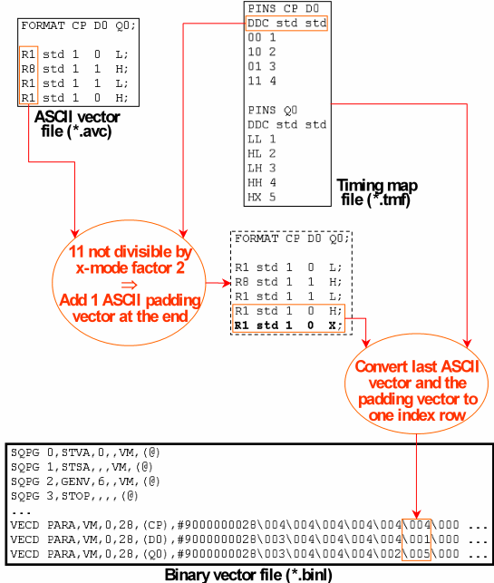

X-Mode ASCII Vector Padding
When a pattern is processed with an x-mode factor > 1, the number of its ASCII vectors must be a multiple of the x-mode factor. If the ASCII vector file contains sequencer instructions, the number of vectors between any two sequencer instructions must also be a multiple of the x-mode factor.
If your ASCII vector file does not fulfill these requirements, you can cause the vector translation to insert a padding ASCII vector for the required number of times automatically. At the end of the file, this is done by default. For the vectors between two sequencer instructions, you must activate this kind of padding explicitly in your aiv call.
There are two different v2b options for activating ASCII vector padding for sequencer instructions:
- -xpi activates ASCII vector padding for sequencer instructions that are coded in the ASCII vector file.
- -xph activates ASCII vector padding for sequencer instructions that are inserted automatically by the vector translation (CTIM or RPTV instructions).
By default, the ASCII padding vector is generated from the last ASCII vector before the sequencer instruction or the end of the file according to the following rules:
- If the state character of the last vector is L or H for a certain pin, the padding vector uses X instead. This is based on the assumption that L and H are only used for compare actions and X is defined as a mask for the respective pin in the ASCII device cycle of the last vector.
- All other state characters are repeated from the last ASCII vector.Note If you use an x-mode control file (*.cmb), do not forget to include the state character sequences for the padding in that file.
You can override these default rules by specifying a padding translation file to aiv with the -xpi, -xph, or (for padding at the end of the file) the -xpe option. This file consists of a mapping from source state characters to target state characters. The vector translation then generates the padding vector by translating the last vector before the sequencer instruction, or before the end of the file, according to this mapping. For more details about the padding translation file, see The Padding Translation File.
You can also specify additional numerical parameters with -xpi and -xpe. If you do, v2b will pad the vectors not only to the next multiple of the x-mode factor of the respective pattern, but to the next common multiple of the x-mode factor and all numerical parameters. This can be used to synchronize subroutine calls in different ports of the same sequencing group. Another application is synchronization of scan and parallel blocks in multi-port scan setups, see Synchronizing Scan and Parallel Ports with Different X-Mode Factors.
Example
The following example illustrates the ASCII vector padding for an x-mode factor of 2; the padding vector is generated by the default rules:
